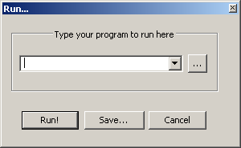
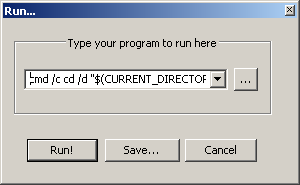
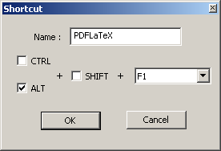

Biometrics Software FAQ
Table of Contents
- 1. Abbreviations used for administration of drugs
- 2. ASCII control characters
- 3. SAS
- 3.1. Converting a variable from numeric to character
- 3.2. Converting a variable from numeric to character respecting the format
- 3.3. Converting a variable from character to numeric
- 3.4. Extracting the last character from a string
- 3.5. Removing blanks from a string
- 3.6. Location of the SAS temporary work directory
- 3.7. List of SAS member types
- 3.8. Dictionary
- 3.9. Reading data from CSV files
- 4. Regular Expressions
- 5. MS Word
- 6. Configuring Notepad++ to run PDFLaTeX
1 Abbreviations used for administration of drugs
| Abbrev. | Meaning | Latin (or New Latin) origin |
|---|---|---|
| a.c. | Before meals | ante cibum |
| q.o.d | Every other day | quaque otra die |
| q.i.d | Four times a day | quater in die |
| a.m. | After noon | post meridiem |
| p.m. | Morning | ante meridiem |
| b.i.d. (or bid) | Twice a day/daily | bis in die |
| gtt. | Drop(s) | gutta(e) |
| h. | Hour | hora |
| h.s. | At bedtime | hora somni |
| o.d. | Right eye | oculus dexter |
| o.s. | Left eye | oculus sinister |
| o.u. | Both eyes | oculus uterque |
| p.c. | After meal | post cibum |
| p.m. | Afternoon | post meridiem |
| p.o. (or po) | Orally / by mouth | per os |
| p.r. (or pr) | Rectally | per rectum |
| p.r.n. | As needed | pro re nata |
| q. | every | quaque |
| q.2.h. | Every two hours | quaque secunda hora |
| q.4.h. | Every four hours | quaque quarta hora |
| q.6.h. | Every six hours | quaque sexta hora |
| q.8.h. | Every eight hours | quaque octava hora |
| q.d. (or qd) | Every day/daily | quaque die |
| q.i.d | Four times a day | quater in die |
| q.h. | Every hour, hourly | quaque hora |
| q.s. | A sufficient quantity | quantum sufficiat |
| Sig. (or S.) | Directions to patient | signa |
| Stat. | Immediately, with no delay | statim |
| t.i.d. (or tid) | Three times a day | ter in die |
| s.i.d. (or sid) | Once per day | semel in die |
| u.d. (or Ut dict.) | As directed | ut dictum |
| IM | intramuscular | |
| IP | Intraperitoneal | |
| IV | Intravenous | |
| IN | Intranasal |
2 ASCII control characters
The most important control characters are horizontal tab, line feed, and carriage return. Tab is for moving the printing position some spaces to the right. Depending on the operating system, line feed, carriage return or the combination of them indicate the end of a line.
| Name | Notepad ++ | ASCII | ASCII Hex | String Notation | Caret Notation | Input method |
|---|---|---|---|---|---|---|
| Horizontal Tab | → | 9 | 09 | \t |
^I |
C-q C-i |
| Line Feed | LF | 10 | 0A | \n |
^J |
C-q C-j |
| Carriage Return | CR | 13 | 0D | \r |
^M |
C-q C-m |
Example: SAS uses hexadecimal notation, so the line feed character (LF) in SAS is '0A'x, and CRLF is '0D0A'x.
Example: the SAS function call: compress(source_text, '0D'x); removes Carriage Returns from a character variable.
Following is the newline convention in different operating systems.
| Operating System | Newline Convention | Notes |
|---|---|---|
| Unix, Linux, Mac OS X | \n |
Mac OS X prefers \n, but accepts the Mac OS Classic's \r too. |
| Windows | \r\n |
|
| Mac OS Classic | \r |
3 SAS
3.1 Converting a variable from numeric to character
Following is an example of how to create a character variable from a numeric variable. The example uses the PUT function. The PUT function writes values with a specified format. It takes two arguments: the name of the variable, and a SAS format or user-defined format for writing the data. By default, if the first argument (the source) is numeric, the resulting string will be right aligned, and if the it is character, the result will be left aligned. To override the default alignment, you can add an alignment specification to a format: -L left aligns the value, -C centers the value, and -R right aligns the value.
data presidents; input id name $11. telephone $12.; datalines; 1 Washington 0 19 Hayes 1 44 Obama 202-456-1111 ; run; data character; set presidents; phone_char = PUT(phone_number, 12.); run;
3.2 Converting a variable from numeric to character respecting the format
Following is an example of how to create a character variable from a numeric variable which has a format. The aim is to retrieve the formatted value as a character string. The example uses the VVALUE function. The VALUE function writes the formatted value of a variable as a character string.
proc format library=work; value president_ 0 = 'Washington' 16 = 'Lincoln' 44 = 'Obama'; quit; data presidents_numeric; input id name; datalines; 1 0 2 16 3 44 ; run; data presidents_formatted; set presidents_numeric; attrib name format = president_.; run; data presidents_character; set presidents_formatted; president_char = VVALUE(name); run;
3.3 Converting a variable from character to numeric
Following is an example of how to create a numeric variable from a character variable. The example uses the INPUT function. The INPUT function can convert values by using a specified informat. The informat determines whether the result is numeric or character. It takes two arguments: the name of the variable, and a SAS informat for reading the data. The difference with the PUT function is that INPUT uses an informat instead of a format.
data presidents; input id name $ phone_number $12.; datalines; 1 Washington 0 19 Hayes 1 44 Obama 2024561111 ; run; data numeric; set presidents; phone_num = INPUT(phone_number, 12.); run;
3.4 Extracting the last character from a string
The following example shows how to extract the last character from a character string variable. The example uses the REVERSE and the SUBSTR functions. The REVERSE function returns a character string backward. The last character in the argument becomes the first character in the result, the next-to-last character in the argument becomes the second character in the result, and so on. The SUBSTR function returns a substring of the first argument. The second argument is the position of the first character of the substring to extract. The optional third argument specifies the length of the substring. If no length is specified SAS will read on until the end of the string.
data presidents; input id name $ telephone $12.; datalines; 1 Washington 0 19 Hayes 1 44 Obama 202-456-1111 ; run; data annotate; set presidents; char_rev = REVERSE(telephone); char_last = SUBSTR(COMPRESS(char_rev), 1, 1); IF char_last=1 THEN note = 'President with phone number ending in 1'; run;
3.5 Removing blanks from a string
3.5.1 Leading and trailing blanks
The SAS function STRIP returns a character string with all leading and trailing blanks removed. To demonstrate this functionality, the number of spaces at the beginning of the lines after the datalines statement was chosen deliberately; make sure to keep them intact when copy/pasting the code.
data lengthn; input string $char8.; original = '*' || string || '*'; stripped = '*' || strip(string) || '*'; datalines; abcd abcd abcd abcdefgh x y z ; run;
The SAS CATS function returns a concatenated character string with leading and trailing blanks removed. The CATS function is equivalent to first using LEFT and then passing the result to the TRIM function.
3.5.2 Removing line breaks from a string
The SAS TRANSLATE function replaces characters in a string. For
example, var = translate(var,' ','0A'x); replaces line feeds by
spaces. Note that the `to' argument comes before the `from'
argument. If you want to TRANSLATE multiple characters, you
should specify pairs of to and from arguments (although this is not
required in some operating systems), using a comma as a
placeholder.
The SAS function COMPRESS removes characters from a string. For
examle, compress(source_text, '0D'x); removes Carriage Returns
from a character variable.
See section ASCII control characters for a table with the most important characters.
3.6 Location of the SAS temporary work directory
%put %sysfunc(getoption(work));
3.7 List of SAS member types
SAS files in a directory are called members of a library. Each member has a member type.
3.8 Dictionary
3.9 Reading data from CSV files
3.9.1 Line feeds within strings
The SAS code below will change your file on disk using the sharebuffers option, so make sure you keep a backup of your file.
%let repA=' '; /* replacement character for LF */ %let repD=' '; /* replacement character for CR */ /* name of the CSV file including the full path */ %let dsnnme="~/Patients2.csv"; data _null_; /* RECFM=N reads the file in binary format. The file consists of a */ /* stream of bytes with no record boundaries. /* SHAREBUFFERS specifies that the FILE statement and the INFILE */ /* statement share the same buffer. */ infile &dsnnme recfm=n sharebuffers; file &dsnnme recfm=n; /* OPEN is a flag variable used to determine if the CR/LF is */ /* within double quotes or not. Retain this value. */ retain open 0; input a $char1.; /* If the character is a double quote, set OPEN to its opposite value. */ if a = '"' then open = ^(open); /* If the CR or LF is after an open double quote, replace the byte with */ /* the appropriate value. */ if open then do; if a = '0D'x then put &repD; else if a = '0A'x then put &repA; end; run; /* use termstr to specify the line-ending style if necessary */ filename infle '~/Patients2.csv' /*termstr=CRLF*/; PROC IMPORT OUT=WORK.patientES DATAFILE=infle DBMS=DLM REPLACE ; DELIMITER='3B'x; GETNAMES=YES; DATAROW=2; GUESSINGROWS=2000; RUN;
3.9.2 Reading data from difficult txt files
It may be difficult to import a text files into SAS if it contains a character string variable with spaces and the length is not known in advance. An exampe is the file icd10cm_codes_2018.txt, which can be downloaded from Centers for Medicare & Medicaid Services.
data icd10book; infile "&projectdir/data/import/icd10/icd10cm_codes_2018.txt"; input icd10_code $ icd10_desc & $196.; run;
The & (ampersand) format modifier enables you to read character values that contain embedded blanks with list input and to specify a character informat. SAS reads until it encounters multiple blanks. See also chapter SAS INPUT Statement from the SAS Language Reference.
3.9.3 Writing a dataset to a plain text file
proc export data=mydataset outfile='C:\mydataset.txt' dbms=tab replace; putnames=yes; quit;
3.9.4 Writing data to results viewer
data _null_; set presidents; file print header=newpage; put id @7 name @18 telephone; return; newpage: put 'patnr' @7 'name' @ 18 'telephone'; put 29*'='; return; run;
4 Regular Expressions
See Jan Goyvaerts' Quick Reference for a longer list.
Remember the difference between greedy and lazy matching.
| Syntax | Description |
|---|---|
\\d |
Digit, 0,1,2 … 9 |
\\D |
Not Digit |
\\s |
Space |
\\S |
Not Space |
\\w |
Word |
\\W |
Not Word |
\\t |
Tab |
\\n |
New line |
^ |
Beginning of the string |
$ |
End of the string |
\ |
Escape special characters, for example \\ is "\", \+ is "+" |
| | | Alternation match, for example /(e\vert{}d)n/ matches en and dn |
. |
Any character, except \n or line terminator |
[ab] |
a or b |
[^ab] |
Any character except a and b |
[0-9] |
All Digit |
[A-Z] |
All uppercase A to Z letters |
[a-z] |
All lowercase a to z letters |
[A-z] |
All Uppercase and lowercase a to z letters |
i+ |
i at least one time |
i* |
i zero or more times |
i? |
i zero or 1 time |
i{n} |
i occurs n times in sequence |
i{n1,n2} |
i occurs n1 - n2 times in sequence |
i{n1,n2}? |
non greedy match, see above example |
i{n,} |
i occures >= n times |
[:alnum:] |
Alphanumeric characters: [:alpha:] and [:digit:] |
[:alpha:] |
Alphabetic characters: [:lower:] and [:upper:] |
[:blank:] |
Blank characters: for example space, tab |
[:cntrl:] |
Control characters |
[:digit:] |
Digits: 0 1 2 3 4 5 6 7 8 9 |
[:graph:] |
Graphical characters: [:alnum:] and [:punct:] |
[:lower:] |
Lower-case letters in the current locale |
[:print:] |
Printable characters: [:alnum:], [:punct:] and space |
[:punct:] |
Punctuation character: ! " # $ % & ' ( ) * + , - . / : ; < = > ? @ [ \ ] ^ _ ` { = | } ~ |
[:space:] |
Space characters: tab, newline, vertical tab, form feed, carriage return, space |
[:upper:] |
Upper-case letters in the current locale |
[:xdigit:] |
Hexadecimal digits: 0 1 2 3 4 5 6 7 8 9 A B C D E F a b c d e f |
5 MS Word
5.1 Minus sign
A minus sign may not be separated from following numeric characters or following opening characters, even if a space character intervenes.
Go to 'insert' → 'symbol' → 'more symbols'. This opens a window. Choose the correct font. You can then choose the right symbol from the map, but it is hard to see the differences between various types of hyphens and the minus sign. So instead go to the field 'character code' abd can enter the code
Line breaking properties for some Unicode dashes and hyphens are listed on Jukka `Yucca' Korpela's page on Dashes and hyphens.
6 Configuring Notepad++ to run PDFLaTeX
In order to setup a Run command in Notepad++, simply press F5 (or select Run → Run…). A box like one below should appear.

In order to configure PDFLaTeX, simply enter the command
cmd /c cd /d "$(CURRENT_DIRECTORY)" && pdflatex.exe -shell-escape "$(FILE_NAME)"
and select "Save" (like in the box below).

Then enter PDFLaTeX for the Name, and then select a hotkey (or shortcut) to run PDFLaTeX. The box below illustrates this using ALT+F1 as the hotkey.

After selecting "OK" and "Cancel"ing the previous box, PDFLaTeX can be executed on the opened LaTeX file simply by pressing the ALT+F1 key combination. Below is a table illustrating several suggested commands as well as potential hotkey combinations.
| Program/Command | Name | Hotkey |
|---|---|---|
cmd /c cd /d "$(CURRENT_DIRECTORY)" && pdflatex.exe -shell-escape "$(FILE_NAME)" |
PDFLaTeX | ALT+F1 |
"C:\Program Files\SumatraPDF\SumatraPDF.exe" "$(CURRENT_DIRECTORY)\$(NAME_PART).pdf" |
SumatraPDF | ALT+F2 |
acrord32 "$(CURRENT_DIRECTORY)\$(NAME_PART).pdf" |
Acrobat Reader | ALT+F3 |
"C:\Program Files\Octave\tools\console\console.exe" -d "$(CURRENT_DIRECTORY)" |
Octave | ALT+F5 |